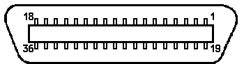

Previous
Next
TOC
Die Centronics, oftmals auch Parallelschnittstelle genannt, ÅEer-
tr‰gt die Daten ÅEer 8 nebeneinander liegenden Datenleitungen.
DatenÅEertragungsverfahren:
8 Bit parallel
DatenÅEertragungsrate:
max. 1000 Zeichen pro Sekunde
Synchronisation:
STROBE-Signal vom Computer
Datenaustausch:
durch ACKNLG- oder BUSY-Signal
Pegel der Schnittstellensignale: TTL-Kompatibel (0V/5V)
Schnittstellenstecker:
57-30360 der Firma Amphenol
Schnittstellenbuchse am Drucker: 57-40360 der Firma Amphenol
Pinbelegung des Schnittstellensteckers (Typ Delta-Ribbon) und Be-
schreibung der Schnittstellenpegel

Pin-Nr.
Bezeichnung
Ein-Ausgang
Beschreibung
auf der
Druckerseite
1
STROBE
Ein
Der STROBE-Impuls dient zum ein-
lesen der Daten.
2-9
Data 1-8
Ein
Die hier ankommenden Daten ent-
sprechen Bit 1-8 eines Datenbytes,
welches zum Drucker gesendet wird.
10
ACKNLG
Aus
Nach dem Empfang eines Datenwortes
geht der Pegel fÅE etwa 10 Mikro-
sekunden auf 0 Volt.
Damit wird mitgeteilt, dafl die Da-
ten richtig angekommen sind und
das der Drucker bereit ist, die
n‰chsten Daten zu empfangen.
11
BUSY
Aus
Wird auf 0V gelegt und damit an-
gezeigt, dafl der Drucker Daten
verarbeiten kann. Falls kein Pa-
pier vorhanden oder OFF-LINE,
liegt der Pegel bei 5V.
12
PE
AUS
Geht auf 5V, falls kein Papier da.
13
SLCT
AUS
Gibt an, ob der Drucker benutzt
wird oder nicht.
14
AUTO FEED XT
EIN
Falls 0V, fÅErt der Drucker jedes-
mal einen Zeilenvorschub durch.
16
GND
AUS
Logischer Massepegel.
15
OSC XT
Nur bei speziellen Ger‰ten!
17
CHASSIS-GND
AUS
Masse vom Druckergeh‰use.
18
+5 Volt
AUS
z.b. fÅE Automatische Umschalter
19-30
GND
AUS
Masseleitungen fÅE Druckerkabel.
31
INIT
EIN
Wenn auf 0V, wird der Drucker-
speicher gelˆscht.
32
ERROR
AUS
Geht auf 0V, falls Papier fehlt
oder OFFLINE.
33
GND
AUS
Masseleitung fÅE Druckerkabel.
34
Nicht benutzt!
35
AUS
‹ber Widerstand auf +5V gelegt
36
SLCT IN
EIN
Drucker kann nur Daten empfangen,
falls dieses Signal auf 0V liegt.
weiterbl‰ttern
Kapitel Die Centronicsschnittstelle/Der Druckeranschlufl, Seite 1